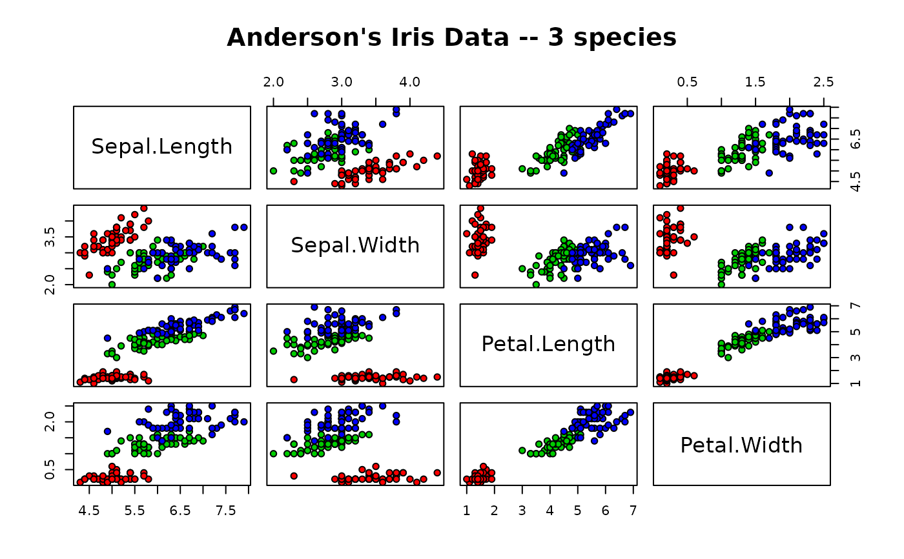
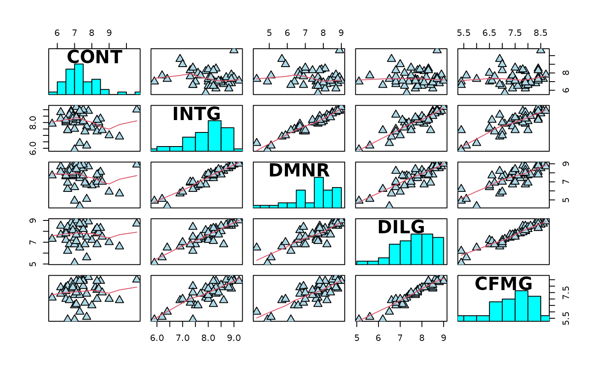
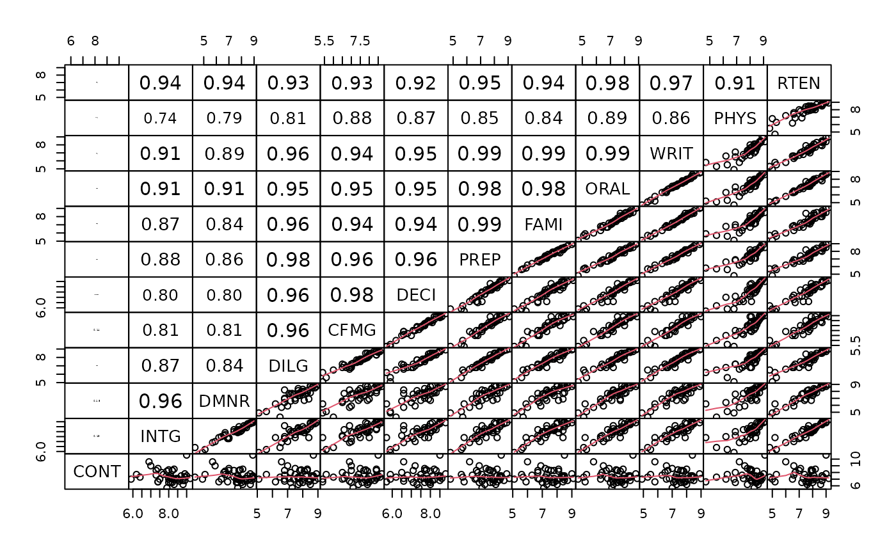

Scatterplot Matrix
pairs.RdA matrix of scatterplots is produced.
Usage
pairs(x, ...)
# S3 method for default
pairs(x, ...)
# S3 method for formula
pairs(formula, data = NULL, ..., subset,
na.action = stats::na.pass)Arguments
- x
An object containing the data to plot.
- formula, data, subset, na.action
See
pairs
.
- ...
Other arguments to pass to the methods.
Details
The ellipse package defines a pairs.profile
method for profile objects. Unfortunately,
so does the MASS package. The ellipse::pairs
generic is supplied to allow users to choose to use
the version in this package. See the pairs.profile
help page for more details.
Value
Typically no useful value is produced; this generic function is called for the side effect of producing the display.
See also
pairs.profile for the method from this package.
Examples
example(pairs, "graphics")
#>
#> pairs> pairs(iris[1:4], main = "Anderson's Iris Data -- 3 species",
#> pairs+ pch = 21, bg = c("red", "green3", "blue")[unclass(iris$Species)])

#>
#> pairs> ## formula method, "graph" layout (row 1 at bottom):
#> pairs> pairs(~ Fertility + Education + Catholic, data = swiss, row1attop=FALSE,
#> pairs+ subset = Education < 20, main = "Swiss data, Education < 20")
#>
#> pairs> pairs(USJudgeRatings, gap=1/10) # (gap: not wasting plotting area)
#>
#> pairs> ## show only lower triangle (and suppress labeling for whatever reason):
#> pairs> pairs(USJudgeRatings, text.panel = NULL, upper.panel = NULL)
#>
#> pairs> ## put histograms on the diagonal
#> pairs> panel.hist <- function(x, ...)
#> pairs+ {
#> pairs+ usr <- par("usr")
#> pairs+ par(usr = c(usr[1:2], 0, 1.5) )
#> pairs+ h <- hist(x, plot = FALSE)
#> pairs+ breaks <- h$breaks; nB <- length(breaks)
#> pairs+ y <- h$counts; y <- y/max(y)
#> pairs+ rect(breaks[-nB], 0, breaks[-1], y, col = "cyan", ...)
#> pairs+ }
#>
#> pairs> pairs(USJudgeRatings[1:5], panel = panel.smooth,
#> pairs+ cex = 1.5, pch = 24, bg = "light blue", horOdd=TRUE,
#> pairs+ diag.panel = panel.hist, cex.labels = 2, font.labels = 2)

#>
#> pairs> ## put (absolute) correlations on the upper panels,
#> pairs> ## with size proportional to the correlations.
#> pairs> panel.cor <- function(x, y, digits = 2, prefix = "", cex.cor, ...)
#> pairs+ {
#> pairs+ par(usr = c(0, 1, 0, 1))
#> pairs+ r <- abs(cor(x, y))
#> pairs+ txt <- format(c(r, 0.123456789), digits = digits)[1]
#> pairs+ txt <- paste0(prefix, txt)
#> pairs+ if(missing(cex.cor)) cex.cor <- 0.8/strwidth(txt)
#> pairs+ text(0.5, 0.5, txt, cex = cex.cor * r)
#> pairs+ }
#>
#> pairs> pairs(USJudgeRatings, lower.panel = panel.smooth, upper.panel = panel.cor,
#> pairs+ gap=0, row1attop=FALSE)

#>
#> pairs> pairs(iris[-5], log = "xy") # plot all variables on log scale
#>
#> pairs> pairs(iris, log = 1:4, # log the first four
#> pairs+ main = "Lengths and Widths in [log]", line.main=1.5, oma=c(2,2,3,2))